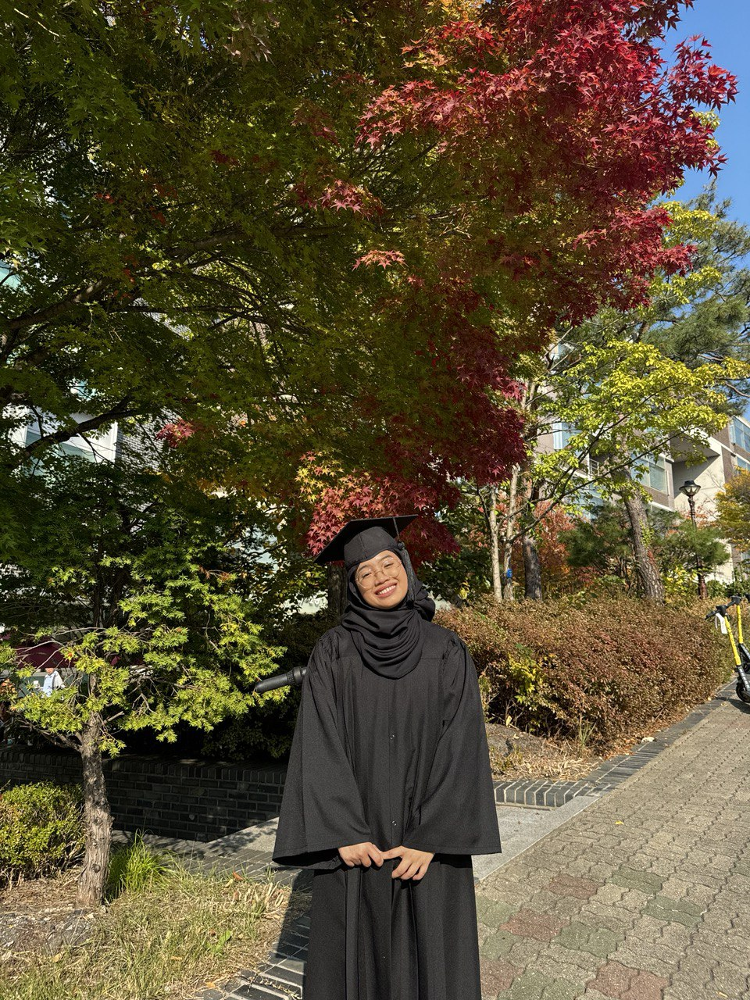

3rd-Year Electrical & Electronics Engineering, Konkuk University · Diploma in Information & Electronic Engineering, Dongyang Mirae University
I'm Asneyda — I build real-world projects with sensors and microcontrollers, from smart monitoring systems to assistive robotics. Currently deepening my skills in embedded programming, control systems, and semiconductors, and actively looking for an internship in embedded systems, electronics, or IoT.

Hands-on engineering, cross-cultural work, and a scholarship that brought it all to Korea.
I like projects that touch the physical world — a sensor that notices something, a system that acts on it.
My work sits at the intersection of embedded programming and everyday problems: keeping an eye on elderly residents who live alone, helping Alzheimer's patients stay safe, or simply making sure food doesn't go to waste. Raspberry Pi and Arduino are usually somewhere in the build.
Outside of engineering, I've spent time as an interpreter and tour guide for Malaysian visitors to Korea, and I currently handle design and web upkeep for my student association. It's a different kind of problem-solving, but the same instinct: notice what's missing, then build it.
Actively seeking internship opportunities in embedded systems, electronics, or IoT to gain hands-on industry experience.
Personal and club projects spanning robotics, IoT, and embedded systems.
A smart monitoring system for elderly individuals with cognitive conditions like dementia — detects entry/exit movement, tracks presence in real time, and alerts caregivers on abnormal behavior or prolonged absence. Built with Raspberry Pi, ultrasonic sensors, and an OLED display, plus an HTTP web interface for live status.
An assistive robotic system supporting individuals with Alzheimer's through daily assistance, memory support, and real-time safety monitoring. Exhibited at the Korea Electronics Show 2025.
Uses a camera to detect and log product expiration dates automatically, then reminds users a day before expiry to cut food waste. Combines HTML-based web development with camera sensing and LED indicators for a practical smart-inventory tool.
Autonomous navigation for a DJI Tello drone using onboard sensors and a downward-facing camera to hold height, avoid obstacles, and land precisely with computer vision. Best Report Award at the IEEK IES Industrial Electronic Technology Fair 2025.
A conceptual safety system that stops a baby walker's motor when an ultrasonic sensor detects a sudden distance change near an edge, such as stairs. Presented at the 5th National University Ignite Storytelling Competition; design and simulation only, no physical build.
A smart car that detects and avoids obstacles in real time by combining ultrasonic and IR sensors with motor control logic — two build iterations, including a multi-sensor Arduino version with three ultrasonic and three IR sensors.
From student-club engineering to interpreting for tourism delegations.
Design posters and visual content for events and announcements, manage social channels, and maintain the PPMK website — while coordinating with the team on large-scale student events.
📷 View photosFreelance Photographer and Videographer specializing in event photography and the production of corporate and event recap videos, from shooting to post-production editing.
📷 View photosCompeted in engineering fairs building real-world robotics, IoT, and assistive-tech solutions — including the obstacle-avoidance drone, the Alzheimer's assistant robot, and the smart baby walker thesis.
📷 View photosProvided real-time Malay–Korean–English interpretation during a tourism event, and helped coordinate activities between organizers, exhibitors, and visitors.
📷 View photosGuided Malaysian tourists across Seoul's major attractions, managing group logistics and cross-cultural communication in Malay and English.
Serves an international customer base at a busy halal Korean restaurant, using English and Korean to assist foreign diners during peak hours.
Prepared matcha and specialty tea beverages with consistent taste and presentation, applying precise preparation techniques in a fast-paced cafe.
Handled beverage prep, equipment operation, and POS transactions, building the ability to work under pressure and troubleshoot on the fly.
Prepared menu items to consistent standards in a fast-paced kitchen, coordinating with the team through peak service hours.
JPA-sponsored path through Korean language training, a diploma, and a bachelor's degree.
Grouped by how they get used, not just what they're called.
Photography, video editing, and everything that happens after the shutter clicks.
Camera in one hand, laptop timeline in the other.
I shoot events, vlogs, and personal projects, then take them into post-production — color, pacing, sound — until they actually feel like something. It scratches a similar itch to engineering: notice what's there, then shape it into something clearer.
My edited vlogs live on YouTube, and my photo work is on Instagram — both linked below.